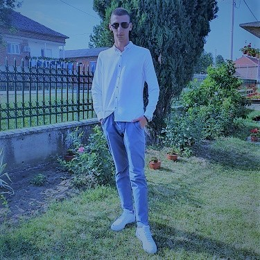

Ja sam Marković Marko, imam 18 godina i studiram Visoku ICT. U slobodno vreme se bavim fotografijom. Volim da fotografišem prirodu, ljudske figure, automobile...
Volim da se igram sa bojama i teksturama i da pravim neobične umetničke fotografije. Takođe, volim da učim nove programe za obradu forografija i da ih koristim za obradu svojih fotografija.
Posedujem svu potrebnu opremu za pravljenje kvalitetnih umetničkih fotografija. Koristim Canon EOS 800D koji uspeva da "oživi" svaku moju fotografiju.